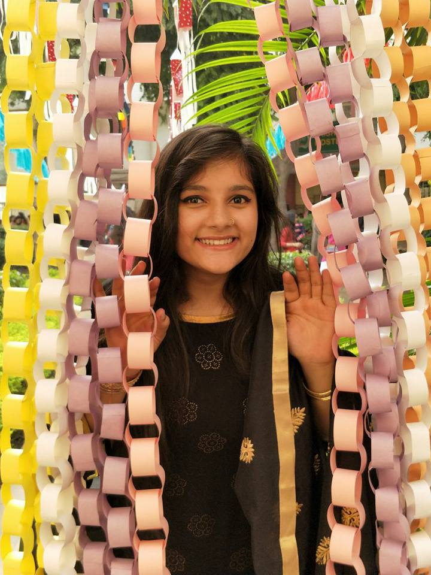
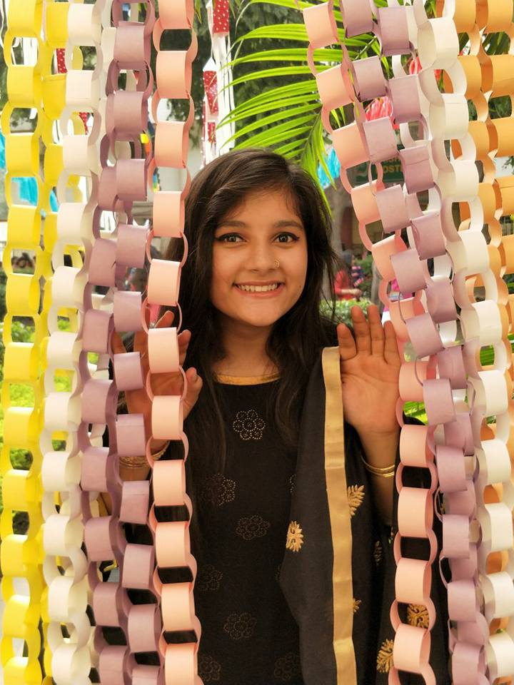

CODER. EXPLORER. DEVELOPER.
I'm Tripti Saini, a happy soul. I am currently pursuing B.Tech in computer science engineering from Indira Gandhi Delhi Technical University, Delhi.
I am passionate about a lot of things, but specifically art, food, travel and doing good in the world. I like to make sketches and play with water colors. Get to know me, you'll quickly find out what all gifts can I give you on your special day. I have a sweet tooth and a little love never do any harm to anyone. I like to go places and live in moments. I also like to capture precious times for memories. I enjoy teaching kids and watching movies with them.
I like to explore and take part in co-curricular activities. Some societies I have worked with:
I devoted my first year of college learning street skills and sharing ideas and facts with people through a street play on the topic 'Children of War', showing the life of children trapped in a war zone. I was part of the performing and I used to act and sing in choir. Our team participated in numerous college fests and gave public performances as well. I was able to inculcate the most important skills of dedication and puntuality through this society.
I have been a contant part of the organising team of the cultural fest of our college. Having great interest in art, I worked for the team Creative. I learned working on Photoshop and Gimp,and making online posters. Also, I learned how to work in a team of 500+ people and be organised and dedicated.
I have been a member of RAF IGDTUW chapter for two years. The aim of this society is to impart knowledge to underpriviledged kids and make them stand strong for the future. I find immense pleasure teaching little kids. We often come up with creative ideas to learn new concepts.
I joined Rotaract club of IGDTUW in the second year of college as a member and later I got the opportunity to lead the creative team and be the Director of Vocational Services. In the tenure of one year, we did several projects including Blood Donation Camp, Self Defence Workshop, Mental Health Awareness Session and many more. It gives me utmost happiness to make a change in the lives of people through little steps.
I volunteered for the Media Team for the tech fest. I had the role to edit videos and provide creative ideas. I learned working on Adobe After Effects and Filmora.
I am a volunteer at the TnP cell of IGDTUW. As a volunteer, I am supposed to coordinate for management work on my day of duty and also invigilate during tests.